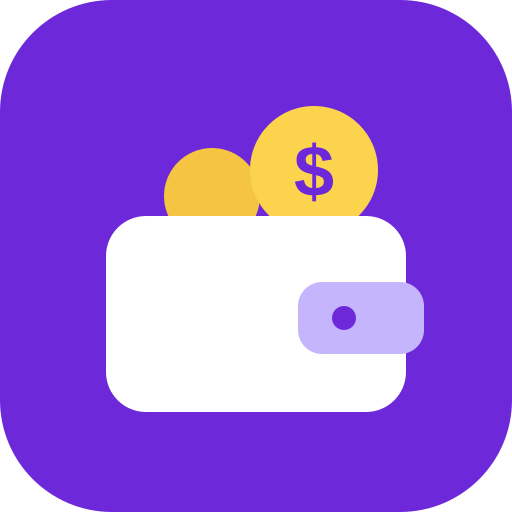

FinAppPolítica de privacidad
Última actualización: 6 de octubre de 2026
Qué es FinApp
FinApp es una aplicación web para organizar tus finanzas personales: repartes tu dinero en "espacios" y registras ingresos, gastos y traslados entre ellos.
Dónde se guardan tus datos
Tus datos se guardan en tu propio Google Drive, en una hoja de cálculo de Google Sheets que la app crea a tu nombre la primera vez que inicias sesión. FinApp no tiene servidores ni bases de datos propias: la persona que creó la app no recibe, no almacena y no puede ver tu información.
Para que la app funcione sin internet, se guarda una copia temporal de tus datos en el almacenamiento del navegador de tu propio dispositivo. Esa copia se borra cuando cierras sesión en la app.
Qué permisos pide la app y para qué
- Iniciar sesión con Google: para identificar tu cuenta y conectarse a tu Google Drive.
- Acceso a los archivos de Google Drive creados con esta app (permiso
drive.file): solo para crear, leer y actualizar tu hoja "Mis finanzas". La app no puede ver ni modificar ningún otro archivo de tu Drive.
Qué datos maneja
Solo los que tú registras: tu nombre o apodo, los espacios que creas (nombre, color, ícono y meta) y tus movimientos (fecha, tipo, monto, espacio y descripción).
FinApp no usa publicidad, no usa herramientas de seguimiento o analítica, no vende ni comparte tus datos con nadie y no los usa para entrenar modelos de inteligencia artificial.
Uso de los datos de Google
El uso que hace FinApp de la información recibida de las API de Google cumple con la Política de datos de usuario de los servicios de las API de Google, incluidos los requisitos de uso limitado.
Tu control sobre los datos
- Puedes ver y editar tu hoja directamente en Google Sheets cuando quieras.
- Puedes exportar tus movimientos a Excel o CSV desde la app.
- Puedes borrar todos tus datos eliminando la hoja "Mis finanzas" de tu Google Drive.
- Puedes quitarle el acceso a la app en cualquier momento desde myaccount.google.com/permissions.
Contacto
Si tienes preguntas sobre esta política, escribe a: taborda.natalia1908@gmail.com